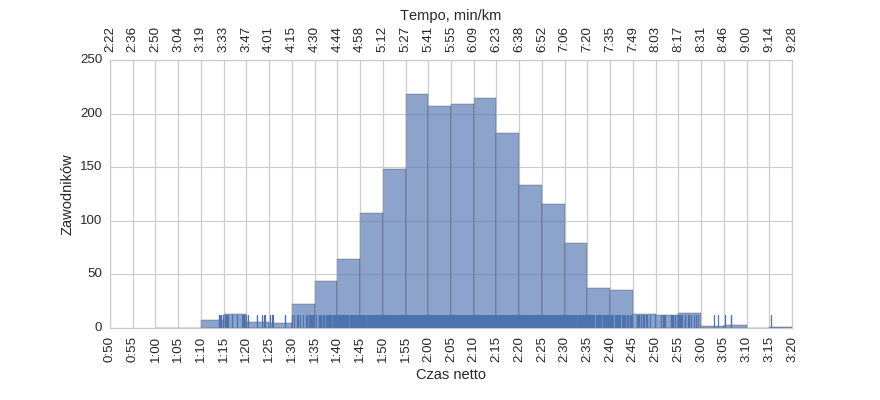
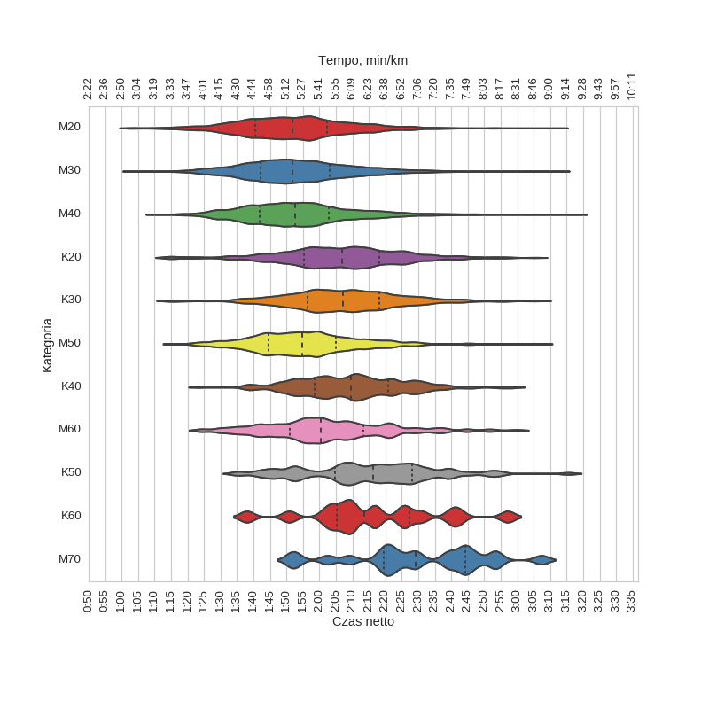

8 Półmaraton Warszawski (2013)
Histogramy
Klasyfikacja generalna
|
mean |
std |
min |
25% |
50% |
75% |
max |
| czas |
1:56:20 |
0:18:05 |
1:02:47 |
1:43:51 |
1:55:01 |
2:07:32 |
3:17:44 |
kobiety

|
mean |
std |
min |
25% |
50% |
75% |
max |
| czas |
2:08:01 |
0:17:52 |
1:14:01 |
1:56:34 |
2:07:50 |
2:19:08 |
3:15:25 |
mężczyźni
|
mean |
std |
min |
25% |
50% |
75% |
max |
| czas |
1:53:38 |
0:17:01 |
1:02:47 |
1:42:07 |
1:52:26 |
2:03:20 |
3:17:44 |
Wykresy rybkowe
wg płci

|
czas |
count |
|
mean |
std |
min |
25% |
50% |
75% |
max |
|
| plec |
|
|
|
|
|
|
|
|
| K |
2:08:01 |
0:17:52 |
1:14:01 |
1:56:34 |
2:07:50 |
2:19:08 |
3:15:25 |
1892 |
| M |
1:53:38 |
0:17:01 |
1:02:47 |
1:42:07 |
1:52:26 |
2:03:20 |
3:17:44 |
8184 |
wg kategorii

|
czas |
count |
|
mean |
std |
min |
25% |
50% |
75% |
max |
|
| kat |
|
|
|
|
|
|
|
|
| K20 |
2:06:33 |
0:18:30 |
1:14:01 |
1:55:23 |
2:06:53 |
2:18:13 |
3:05:20 |
605 |
| K30 |
2:07:24 |
0:17:28 |
1:14:08 |
1:56:21 |
2:07:03 |
2:18:06 |
3:06:38 |
866 |
| K40 |
2:09:53 |
0:16:12 |
1:23:32 |
1:58:38 |
2:09:40 |
2:20:54 |
2:58:55 |
314 |
| K50 |
2:15:25 |
0:19:52 |
1:34:45 |
2:04:42 |
2:16:19 |
2:28:06 |
3:15:25 |
89 |
| K60 |
2:16:28 |
0:20:02 |
1:37:58 |
2:05:22 |
2:13:29 |
2:27:11 |
2:57:04 |
16 |
| M20 |
1:52:20 |
0:17:00 |
1:02:47 |
1:40:40 |
1:51:43 |
2:02:22 |
3:11:53 |
1863 |
| M30 |
1:53:23 |
0:16:47 |
1:03:41 |
1:42:12 |
1:51:55 |
2:03:15 |
3:12:26 |
3602 |
| M40 |
1:53:39 |
0:16:52 |
1:10:42 |
1:41:54 |
1:52:30 |
2:02:47 |
3:17:44 |
1984 |
| M50 |
1:55:48 |
0:16:24 |
1:15:51 |
1:44:30 |
1:54:42 |
2:04:55 |
3:07:19 |
571 |
| M60 |
2:02:32 |
0:18:37 |
1:24:12 |
1:51:09 |
2:00:26 |
2:13:16 |
2:59:39 |
144 |
| M70 |
2:29:39 |
0:20:36 |
1:51:24 |
2:19:38 |
2:29:07 |
2:44:18 |
3:07:21 |
20 |
wg krajów
|
czas |
count |
|
mean |
std |
min |
25% |
50% |
75% |
max |
|
| kraj |
|
|
|
|
|
|
|
|
| FRA |
1:54:52 |
0:20:41 |
1:11:58 |
1:44:08 |
1:55:17 |
2:05:58 |
2:28:54 |
18 |
| GBR |
1:59:41 |
0:18:40 |
1:20:47 |
1:48:03 |
1:59:03 |
2:09:48 |
2:43:43 |
28 |
| GER |
2:03:31 |
0:20:38 |
1:30:14 |
1:49:37 |
2:05:53 |
2:15:10 |
2:44:17 |
13 |
| POL |
1:56:23 |
0:17:56 |
1:03:22 |
1:43:56 |
1:55:01 |
2:07:26 |
3:17:44 |
9858 |
| RUS |
1:34:44 |
0:21:12 |
1:07:47 |
1:16:42 |
1:33:03 |
1:49:48 |
2:10:50 |
11 |
| UKR |
2:06:25 |
0:28:35 |
1:15:31 |
1:50:15 |
2:08:04 |
2:23:49 |
2:56:26 |
11 |
| USA |
2:06:39 |
0:19:16 |
1:45:07 |
1:52:02 |
2:03:05 |
2:13:09 |
2:51:54 |
19 |
wg imion
|
czas |
count |
|
mean |
std |
min |
25% |
50% |
75% |
max |
|
| imie |
|
|
|
|
|
|
|
|
| ADAM |
1:53:24 |
0:16:51 |
1:13:53 |
1:40:34 |
1:51:22 |
2:05:19 |
2:55:31 |
171 |
| AGNIESZKA |
2:06:32 |
0:17:07 |
1:15:20 |
1:55:11 |
2:05:38 |
2:17:35 |
2:45:49 |
109 |
| ANDRZEJ |
1:53:41 |
0:18:58 |
1:15:47 |
1:42:02 |
1:51:30 |
2:04:02 |
2:48:45 |
193 |
| ANNA |
2:07:29 |
0:18:21 |
1:19:52 |
1:52:56 |
2:06:12 |
2:19:15 |
3:15:25 |
172 |
| ARTUR |
1:53:32 |
0:16:44 |
1:10:03 |
1:41:50 |
1:52:37 |
2:03:28 |
2:53:43 |
121 |
| BARTOSZ |
1:53:05 |
0:16:52 |
1:10:14 |
1:43:10 |
1:50:56 |
2:03:02 |
2:37:46 |
111 |
| DARIUSZ |
1:53:15 |
0:18:34 |
1:10:42 |
1:38:21 |
1:54:10 |
2:02:16 |
3:09:16 |
143 |
| GRZEGORZ |
1:52:37 |
0:16:38 |
1:17:14 |
1:41:09 |
1:50:57 |
2:01:52 |
2:56:07 |
224 |
| JACEK |
1:55:14 |
0:18:20 |
1:12:54 |
1:41:52 |
1:54:27 |
2:05:54 |
2:47:30 |
169 |
| JAKUB |
1:52:41 |
0:16:22 |
1:15:43 |
1:40:17 |
1:51:42 |
2:04:01 |
2:30:38 |
136 |
| JAROSŁAW |
1:52:02 |
0:16:37 |
1:17:41 |
1:38:53 |
1:51:00 |
2:00:24 |
2:47:54 |
129 |
| KATARZYNA |
2:07:04 |
0:16:20 |
1:22:16 |
1:58:13 |
2:05:52 |
2:15:16 |
2:58:55 |
114 |
| KRZYSZTOF |
1:53:47 |
0:16:56 |
1:16:50 |
1:41:30 |
1:51:18 |
2:03:12 |
2:56:20 |
359 |
| MACIEJ |
1:54:01 |
0:18:10 |
1:09:44 |
1:42:18 |
1:52:49 |
2:02:36 |
3:17:44 |
252 |
| MARCIN |
1:53:48 |
0:17:25 |
1:03:22 |
1:41:48 |
1:53:46 |
2:03:01 |
3:11:53 |
454 |
| MAREK |
1:53:06 |
0:16:56 |
1:15:09 |
1:42:34 |
1:51:13 |
2:03:14 |
2:43:10 |
224 |
| MARIUSZ |
1:53:57 |
0:15:56 |
1:16:30 |
1:43:03 |
1:53:03 |
2:04:38 |
2:52:13 |
166 |
| MICHAŁ |
1:54:41 |
0:17:36 |
1:04:35 |
1:42:24 |
1:55:02 |
2:05:41 |
3:05:32 |
405 |
| PAWEŁ |
1:53:52 |
0:16:14 |
1:07:13 |
1:42:38 |
1:53:55 |
2:03:32 |
2:57:29 |
434 |
| PIOTR |
1:52:52 |
0:16:27 |
1:13:51 |
1:42:19 |
1:51:21 |
2:02:07 |
2:53:44 |
516 |
| RAFAŁ |
1:54:20 |
0:17:27 |
1:16:23 |
1:41:17 |
1:53:40 |
2:05:30 |
2:35:13 |
203 |
| ROBERT |
1:53:21 |
0:17:17 |
1:16:53 |
1:42:29 |
1:50:45 |
2:02:58 |
2:51:18 |
192 |
| TOMASZ |
1:54:16 |
0:16:35 |
1:15:23 |
1:43:14 |
1:53:12 |
2:02:42 |
2:59:18 |
423 |
| WOJCIECH |
1:55:44 |
0:17:09 |
1:21:02 |
1:44:45 |
1:52:20 |
2:05:09 |
3:07:19 |
166 |
| ŁUKASZ |
1:52:41 |
0:17:02 |
1:12:12 |
1:41:52 |
1:51:48 |
2:00:10 |
2:47:38 |
241 |
wg nazwisk
|
czas |
count |
|
mean |
std |
min |
25% |
50% |
75% |
max |
|
| nazwisko |
|
|
|
|
|
|
|
|
| DĄBROWSKI |
1:54:03 |
0:22:37 |
1:27:59 |
1:39:10 |
1:48:27 |
1:59:10 |
3:12:26 |
28 |
| KAMIŃSKI |
1:55:46 |
0:19:30 |
1:19:28 |
1:46:14 |
1:53:01 |
2:03:37 |
2:45:28 |
26 |
| KOWALCZYK |
1:58:01 |
0:17:11 |
1:21:34 |
1:48:10 |
1:59:14 |
2:07:07 |
2:28:25 |
35 |
| KOWALSKI |
2:00:25 |
0:18:15 |
1:19:00 |
1:49:50 |
1:57:22 |
2:14:59 |
2:43:18 |
28 |
| NOWAK |
1:57:59 |
0:22:39 |
1:26:43 |
1:41:10 |
1:52:25 |
2:12:01 |
2:53:44 |
30 |
| PIOTROWSKI |
1:48:00 |
0:20:58 |
1:22:58 |
1:30:23 |
1:45:29 |
1:55:09 |
2:52:32 |
20 |
| SZYMAŃSKI |
1:48:32 |
0:16:57 |
1:17:26 |
1:38:58 |
1:45:44 |
2:00:32 |
2:31:57 |
24 |
| WIŚNIEWSKI |
1:53:20 |
0:15:10 |
1:26:40 |
1:45:06 |
1:51:31 |
2:00:58 |
2:24:06 |
34 |
| ZIELIŃSKI |
2:02:23 |
0:18:33 |
1:38:13 |
1:48:39 |
1:59:36 |
2:12:31 |
2:59:18 |
25 |
wg miejscowości
|
czas |
count |
|
mean |
std |
min |
25% |
50% |
75% |
max |
|
| miejscowosc |
|
|
|
|
|
|
|
|
| BIAŁYSTOK |
1:53:20 |
0:13:50 |
1:26:18 |
1:46:10 |
1:50:13 |
2:01:04 |
2:32:26 |
50 |
| GDAŃSK |
1:50:51 |
0:19:01 |
1:11:57 |
1:37:04 |
1:49:49 |
1:59:20 |
3:07:19 |
102 |
| GDYNIA |
1:51:02 |
0:14:04 |
1:23:40 |
1:42:54 |
1:51:04 |
1:57:48 |
2:35:34 |
72 |
| JÓZEFOSŁAW |
2:01:25 |
0:19:49 |
1:27:20 |
1:45:45 |
1:58:10 |
2:15:44 |
2:53:27 |
50 |
| KIELCE |
1:50:52 |
0:20:25 |
1:13:46 |
1:38:34 |
1:48:12 |
2:02:33 |
2:43:22 |
54 |
| KRAKÓW |
2:01:05 |
0:22:00 |
1:23:47 |
1:45:45 |
2:01:19 |
2:15:28 |
2:57:30 |
73 |
| LEGIONOWO |
2:01:38 |
0:14:12 |
1:28:31 |
1:52:19 |
2:02:19 |
2:10:19 |
2:46:49 |
66 |
| LUBLIN |
1:52:48 |
0:15:36 |
1:19:39 |
1:42:23 |
1:50:38 |
1:58:29 |
2:35:55 |
110 |
| OLSZTYN |
1:45:38 |
0:16:25 |
1:10:42 |
1:34:26 |
1:42:52 |
1:55:16 |
2:35:13 |
106 |
| PIASECZNO |
1:56:21 |
0:19:10 |
1:19:55 |
1:43:56 |
1:54:56 |
2:07:16 |
3:15:25 |
120 |
| POZNAŃ |
1:49:04 |
0:17:30 |
1:04:35 |
1:39:48 |
1:48:50 |
1:57:52 |
2:58:37 |
91 |
| PRUSZKÓW |
1:56:48 |
0:17:27 |
1:18:52 |
1:43:11 |
1:56:36 |
2:09:28 |
2:34:58 |
76 |
| PŁOCK |
1:54:02 |
0:18:26 |
1:12:42 |
1:39:59 |
1:54:31 |
2:05:18 |
3:12:26 |
68 |
| RADOM |
1:55:53 |
0:19:22 |
1:19:27 |
1:43:19 |
1:53:21 |
2:03:51 |
3:08:02 |
63 |
| SIEDLCE |
1:50:43 |
0:19:50 |
1:15:28 |
1:36:58 |
1:48:41 |
2:01:06 |
2:39:16 |
53 |
| SZCZECIN |
1:49:38 |
0:15:11 |
1:21:55 |
1:38:20 |
1:48:59 |
1:54:27 |
2:33:23 |
59 |
| WARSAW |
1:58:06 |
0:15:44 |
1:25:21 |
1:48:06 |
1:56:36 |
2:06:32 |
2:43:15 |
86 |
| WARSZAWA |
1:58:50 |
0:17:34 |
1:10:03 |
1:46:35 |
1:57:19 |
2:09:51 |
3:17:44 |
5048 |
| WROCŁAW |
1:56:57 |
0:15:48 |
1:25:27 |
1:43:33 |
1:59:06 |
2:05:59 |
2:31:59 |
54 |
| ŁÓDŹ |
1:54:28 |
0:17:37 |
1:16:30 |
1:40:31 |
1:51:40 |
2:06:35 |
2:53:50 |
123 |